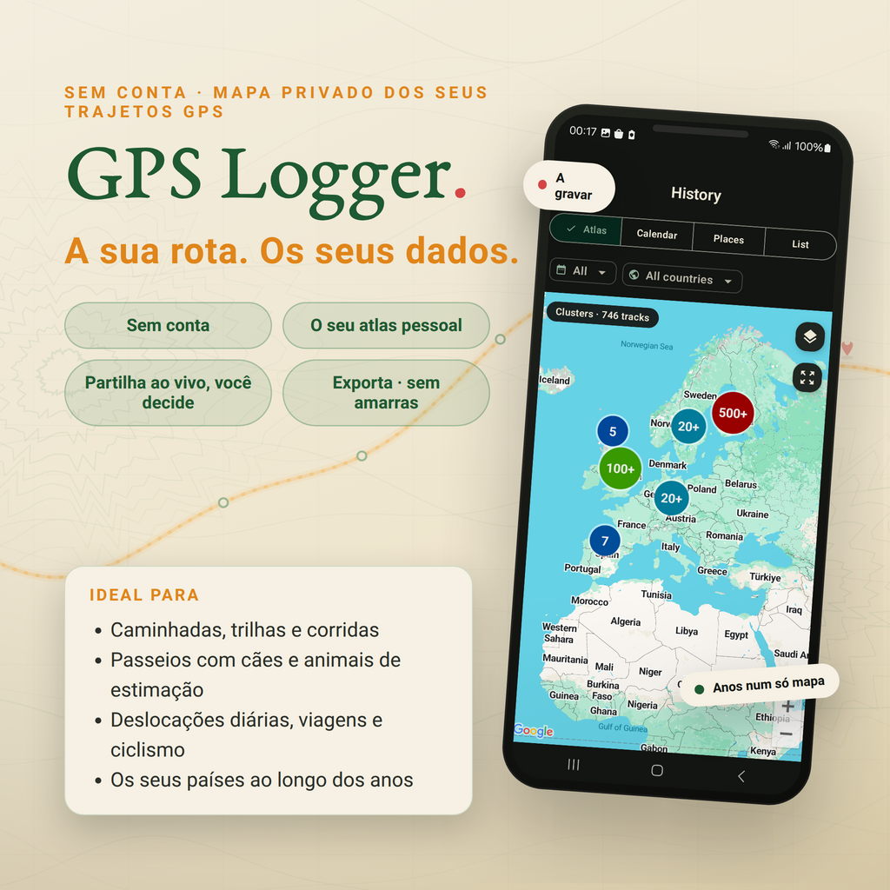
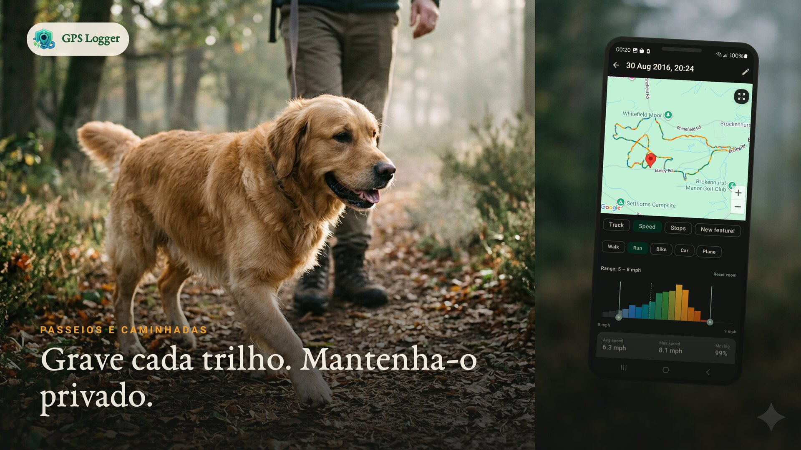
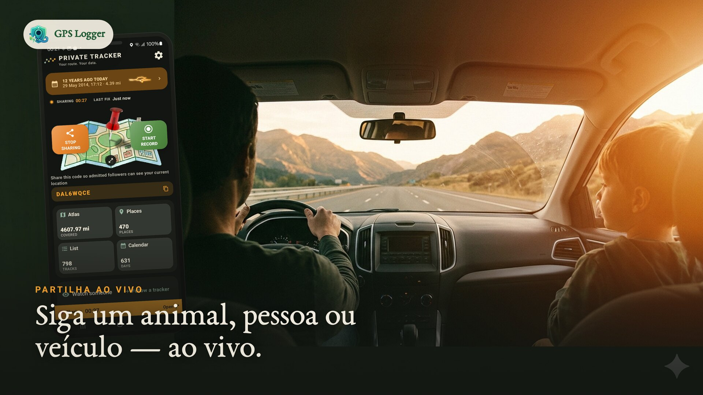
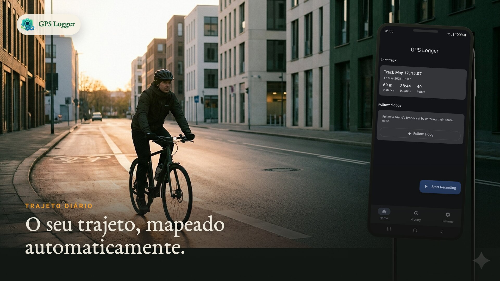
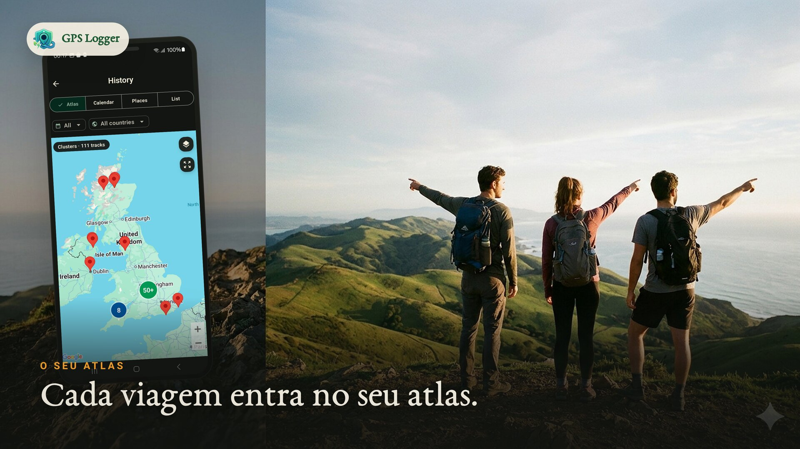
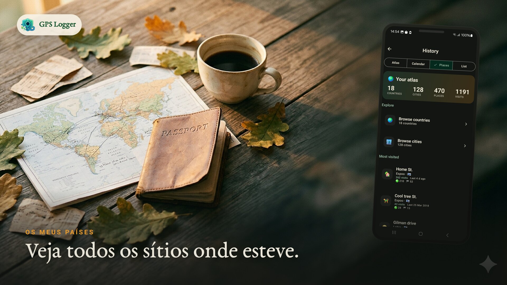
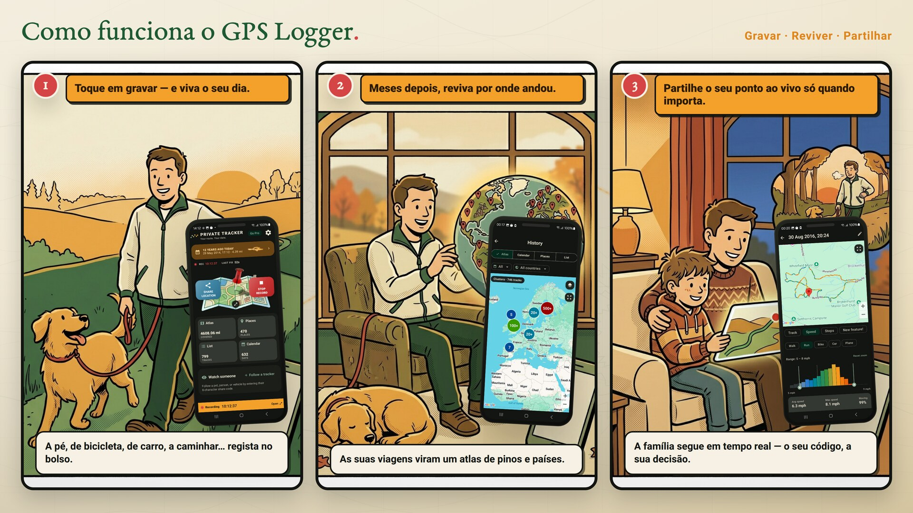
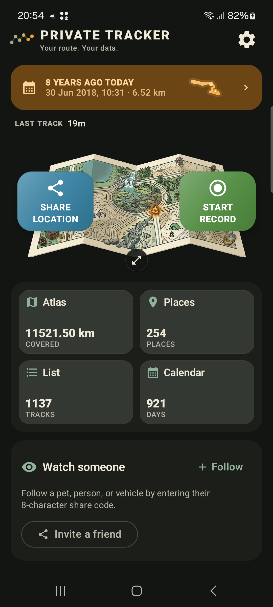
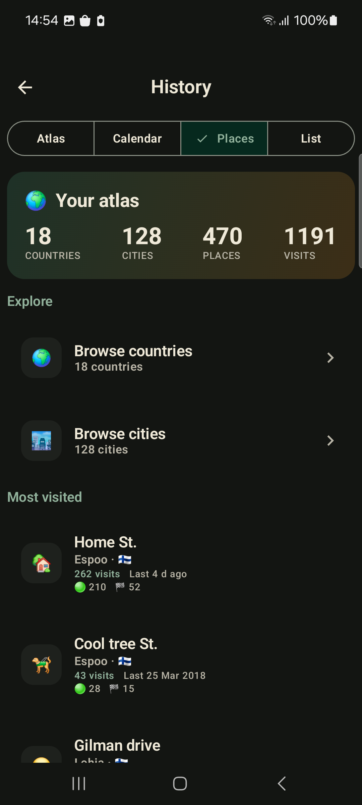
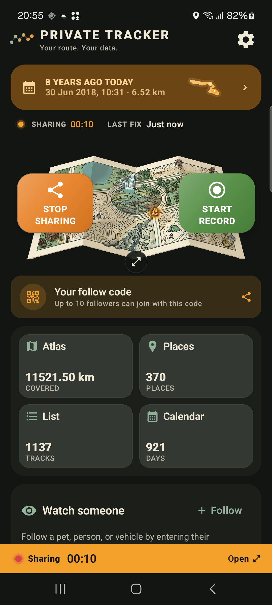

Grave de forma privada
Inicie uma gravação para qualquer caminhada, trilha, passeio, viagem, corrida ou trajeto. Ele continua a rastrear em segundo plano e guarda a sua rota, distância, duração e velocidade quando você para.
Mapa de jornada privado · Gravador GPS
O GPS Logger grava as suas caminhadas, trilhas, passeios e viagens de carro de forma privada no seu celular. Reviva cada viagem num mapa, veja o atlas de uma vida inteira de todos os lugares onde esteve ganhar forma e compartilhe a sua posição em tempo real apenas quando quiser — depois exporte tudo como GPX ou KML, sem bloqueios.

Gravado e armazenado no seu dispositivo — nada sai a menos que você escolha.
Cada viagem constrói um mapa de uma vida, calendário e os lugares onde volta sempre.
GPX e KML por faixa, além de um backup ZIP de todo o histórico. Sempre portátil.
O rastreamento atento ao movimento mantém a bateria baixa e grava com o tela desligado.
Porque é que as pessoas usam o GPS Logger





Veja em movimento

Como funciona

Toque uma vez e já está. Ele rastreia no seu bolso enquanto vive o seu dia.
Meses depois, navegue num mapa de uma vida, nos seus lugares e nos seus países.
Envie a sua localização com um código redefinível e um limite de seguidores que você define.
Conjunto de funcionalidades
Inicie uma gravação para qualquer caminhada, trilha, passeio, viagem, corrida ou trajeto. Ele continua a rastrear em segundo plano e guarda a sua rota, distância, duração e velocidade quando você para.
Um mapa de uma vida inteira de todos os lugares onde esteve, um calendário de dias rastreados, os lugares onde volta sempre e mapas por faixa com visualização de velocidade e estatísticas completas.
Compartilhe a sua posição atual com um código redefinível e um limite de seguidores que você define (1–20). Apenas a sua posição atual é armazenada e é removida após você parar.
Exporte faixas individuais como GPX ou KML, ou faça backup de todo o seu histórico como um arquivo ZIP de GPX. Formatos abertos, os seus dados, a qualquer momento.
O rastreamento adaptável ao movimento reduz a frequência do GPS quando você está parado. Uma notificação em primeiro plano é exibida durante a gravação, com início automático opcional após um reinício.
Sem conta para gravar. As rotas vivem no seu celular, o compartilhamento em tempo real é opcional e você pode redefinir o seu código de compartilhamento ou eliminar faixas quando quiser.
Ecrãs reais da app





Guias de registo GPS
Tutorial
Gravação de rotas passo a passo, rastreamento em segundo plano, exportação GPX e backup de todo o histórico.
Privacidade
O que fica no seu celular, quando o compartilhamento em tempo real envia dados e como manter um mapa de jornada privado.
Elevação
Corrija altitude ruidosa, picos impossíveis e ganho acumulado usando dados de terreno.
Comparação
Escolha entre um diário de rotas privado, uma rede de treino ou ambos.
Fluxo de trabalho
Exporte faixas portáteis para mapeamento, GIS, arquivos de viagens e análise de rotas.
Gratuito, Pro e Vitalício
Tudo o que precisa para começar
Assinatura mensal ou anual
Compra única
O GPS Logger funciona como um serviço de primeiro plano para que a gravação continue quando o tela está desligado ou quando você muda de app, com uma notificação persistente enquanto rastreia. A amostragem adaptável ao movimento mantém o uso da bateria baixo e o início automático opcional pode retomar a gravação após um reinício.
As rotas permanecem no seu celular, a menos que você escolha compartilhá-las em tempo real ou exportá-las. O compartilhamento em tempo real armazena apenas a sua posição atual e remove-a depois de você parar. A visualização do mapa e os diagnósticos utilizam fornecedores de serviços descritos na política de privacidade.
FAQ
Não. A gravação começa apenas quando você a inicia e para quando você a interrompe. A única exceção é o início automático opcional após um reinício, que você próprio ativa.
No seu dispositivo. Nada é enviado, a menos que escolha compartilhar a sua posição atual em tempo real ou exportar um arquivo.
Você compartilha um código redefinível e escolhe um limite de seguidores (1–20). Qualquer pessoa com o código vê apenas a sua posição atual num mapa em tempo real. A posição é removida quando você para, e as posições não acompanhadas são eliminadas automaticamente em 7 dias.
Sim. Exporte qualquer faixa como GPX ou KML, ou faça backup de todo o seu histórico como um ZIP de GPX. Não há bloqueios.
Sim. O Gratuito inclui a gravação, o seu atlas, calendário e lugares, as suas últimas 10 faixas, exportação, uma importação GPX semanal e 15 minutos por dia de compartilhamento em tempo real para cada lado. O Pro e o Vitalício removem os limites.
Sim. Um serviço de primeiro plano mantém a gravação em segundo plano. Para sessões muito longas, siga a orientação de bateria no app para que o Android não a suspenda.